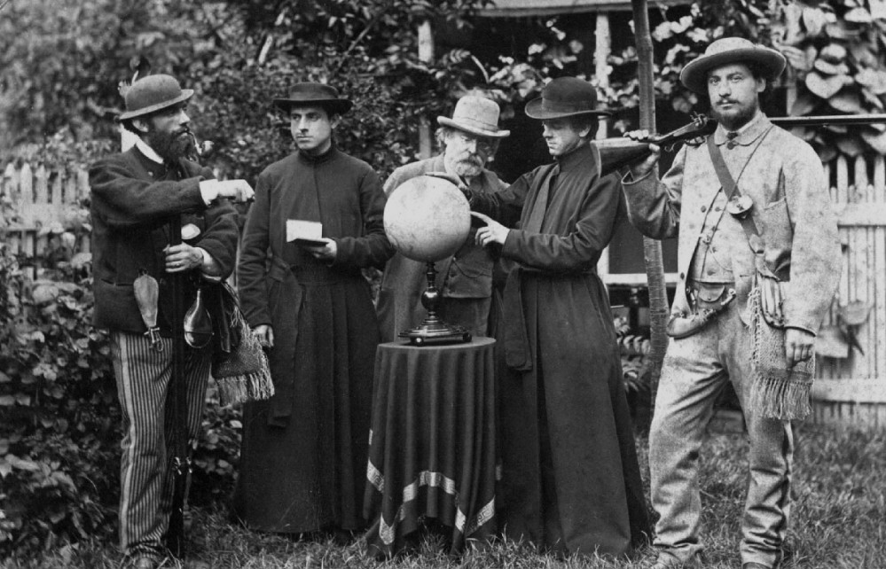
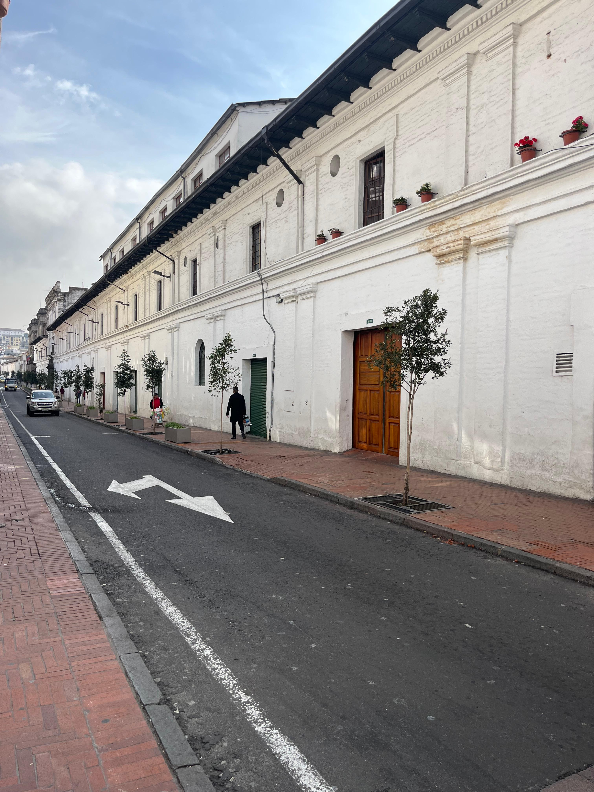
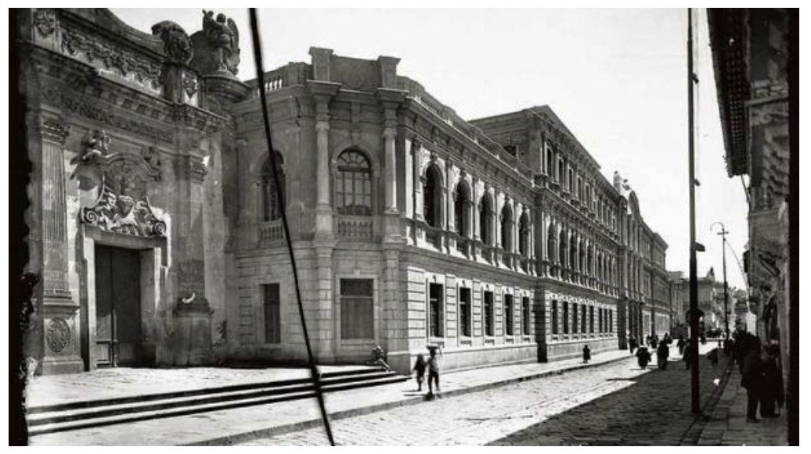

1620 - 1785

Orígenes Coloniales
Universidades San Gregorio y Santo Tomás de Aquino. La era escolástica.
1786 - 1835

Transición e Independencia
Fusión universitaria y el impacto de las guerras de independencia.
1836 - 1901

Fundación Oficial UCE
Decreto de Rocafuerte (1836) y la reapertura tras la clausura garciana.
1902 - 1929

Liberalismo y Autonomía
La influencia alfarista y la conquista de la Autonomía Universitaria (1925).
1930 - 1950

Expansión y Ciudadela
Creación de la Imprenta Universitaria y planificación del campus actual.